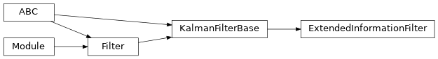
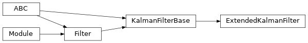
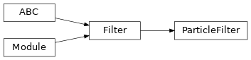
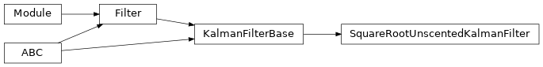
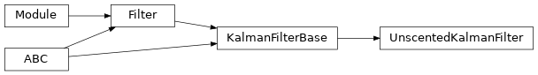
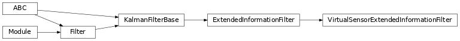
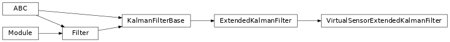
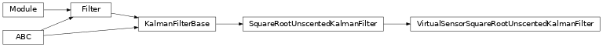
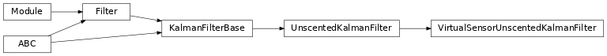

torchfilter.filters¶
Filter implementations; can either be used directly or subclassed.
Package Contents¶
Classes¶
Information form of a Kalman filter; generally equivalent to an EKF but |
|
Generic differentiable EKF. |
|
Generic differentiable particle filter. |
|
Square-root formulation of UKF. |
|
Standard UKF. |
|
EIF variant with a virtual sensor model. |
|
EKF variant with a virtual sensor model. |
|
Square-root UKF variant with a virtual sensor model. |
|
UKF variant with a virtual sensor model. |
-
class
torchfilter.filters.ExtendedInformationFilter(*, dynamics_model: DynamicsModel, measurement_model: KalmanFilterMeasurementModel)[source]¶ Bases:
torchfilter.base.KalmanFilterBaseInformation form of a Kalman filter; generally equivalent to an EKF but internally parameterizes as uncertainties with the inverse covariance matrix.
For building estimators with more complex observation spaces (eg images), see
VirtualSensorExtendedInformationFilter.-
information_vector:torch.Tensor¶ Information vector of our posterior; shape should be
(N, state_dim).- Type
torch.Tensor
-
information_matrix:torch.Tensor¶ Information matrix of our posterior; shape should be
(N, state_dim, state_dim).- Type
torch.Tensor
-
property
belief_covariance(self) → types.CovarianceTorch¶ Posterior covariance. Shape should be
(N, state_dim, state_dim).
-
-
class
torchfilter.filters.ExtendedKalmanFilter(*, dynamics_model: DynamicsModel, measurement_model: KalmanFilterMeasurementModel, **unused_kwargs)[source]¶ Bases:
torchfilter.base.KalmanFilterBaseGeneric differentiable EKF.
For building estimators with more complex observation spaces (eg images), see
VirtualSensorExtendedKalmanFilter.
-
class
torchfilter.filters.ParticleFilter(*, dynamics_model: DynamicsModel, measurement_model: ParticleFilterMeasurementModel, num_particles: int = 100, resample: Optional[bool] = None, soft_resample_alpha: float = 1.0, estimation_method: str = 'weighted_average')[source]¶ Bases:
torchfilter.base.FilterGeneric differentiable particle filter.
-
dynamics_model¶ Forward model.
-
measurement_model¶ Observation model.
-
num_particles¶ Number of particles to represent our belief distribution. Defaults to 100.
- Type
int
-
resample¶ If True, we resample particles & normalize weights at each timestep. If unset (None), we automatically turn resampling on in eval mode and off in train mode.
- Type
bool
-
soft_resample_alpha¶ Tunable constant for differentiable resampling, as described by Karkus et al. in “Particle Filter Networks with Application to Visual Localization”: https://arxiv.org/abs/1805.08975 Defaults to 1.0 (disabled).
- Type
float
-
estimation_method¶ Method of producing state estimates. Options include:
‘weighted_average’: average of particles weighted by their weights.
‘argmax’: state of highest weighted particle.
- Type
str
-
particle_states:torch.Tensor¶ Discrete particles representing our current belief distribution. Shape should be
(N, M, state_dim).- Type
torch.Tensor
-
particle_log_weights:torch.Tensor¶ Weights corresponding to each particle, stored as log-likelihoods. Shape should be
(N, M).- Type
torch.Tensor
-
initialize_beliefs(self, *, mean: types.StatesTorch, covariance: types.CovarianceTorch)[source]¶ Populates initial particles, which will be normally distributed.
- Parameters
mean (torch.Tensor) – Mean of belief. Shape should be
(N, state_dim).covariance (torch.Tensor) – Covariance of belief. Shape should be
(N, state_dim, state_dim).
-
forward(self, *, observations: types.ObservationsTorch, controls: types.ControlsTorch) → types.StatesTorch[source]¶ Particle filter forward pass, single timestep.
- Parameters
observations (dict or torch.Tensor) – observation inputs. should be either a dict of tensors or tensor of shape
(N, ...).controls (dict or torch.Tensor) – control inputs. should be either a dict of tensors or tensor of shape
(N, ...).
- Returns
torch.Tensor – Predicted state for each batch element. Shape should be
(N, state_dim).
-
-
class
torchfilter.filters.SquareRootUnscentedKalmanFilter(*, dynamics_model: DynamicsModel, measurement_model: KalmanFilterMeasurementModel, sigma_point_strategy: Optional[utils.SigmaPointStrategy] = None)[source]¶ Bases:
torchfilter.base.KalmanFilterBaseSquare-root formulation of UKF.
From Algorithm 3.1 of Merwe et al [1].
[1] The square-root unscented Kalman filter for state and parameter-estimation. https://ieeexplore.ieee.org/document/940586/
-
property
belief_covariance(self) → types.CovarianceTorch¶ Posterior covariance. Shape should be
(N, state_dim, state_dim).
-
property
-
class
torchfilter.filters.UnscentedKalmanFilter(*, dynamics_model: DynamicsModel, measurement_model: KalmanFilterMeasurementModel, sigma_point_strategy: Optional[utils.SigmaPointStrategy] = None)[source]¶ Bases:
torchfilter.base.KalmanFilterBaseStandard UKF.
From Algorithm 2.1 of Merwe et al. [1]. For working with heteroscedastic noise models, we use the weighting approach described in [2].
[1] The square-root unscented Kalman filter for state and parameter-estimation. https://ieeexplore.ieee.org/document/940586/
[2] How to Train Your Differentiable Filter https://al.is.tuebingen.mpg.de/uploads_file/attachment/attachment/617/2020_RSS_WS_alina.pdf
-
class
torchfilter.filters.VirtualSensorExtendedInformationFilter(*, dynamics_model: DynamicsModel, virtual_sensor_model: VirtualSensorModel)[source]¶ Bases:
torchfilter.filters,torchfilter.filters.ExtendedInformationFilterEIF variant with a virtual sensor model.
Assumes measurement model is identity.
-
class
torchfilter.filters.VirtualSensorExtendedKalmanFilter(*, dynamics_model: DynamicsModel, virtual_sensor_model: VirtualSensorModel)[source]¶ Bases:
torchfilter.filters,torchfilter.filters.ExtendedKalmanFilterEKF variant with a virtual sensor model.
Assumes measurement model is identity.
-
class
torchfilter.filters.VirtualSensorSquareRootUnscentedKalmanFilter(*, dynamics_model: DynamicsModel, virtual_sensor_model: VirtualSensorModel, sigma_point_strategy: Optional[utils.SigmaPointStrategy] = None)[source]¶ Bases:
torchfilter.filters,torchfilter.filters.SquareRootUnscentedKalmanFilterSquare-root UKF variant with a virtual sensor model.
Assumes measurement model is identity.
-
class
torchfilter.filters.VirtualSensorUnscentedKalmanFilter(*, dynamics_model: DynamicsModel, virtual_sensor_model: VirtualSensorModel, sigma_point_strategy: Optional[utils.SigmaPointStrategy] = None)[source]¶ Bases:
torchfilter.filters,torchfilter.filters.UnscentedKalmanFilterUKF variant with a virtual sensor model.
Assumes measurement model is identity.